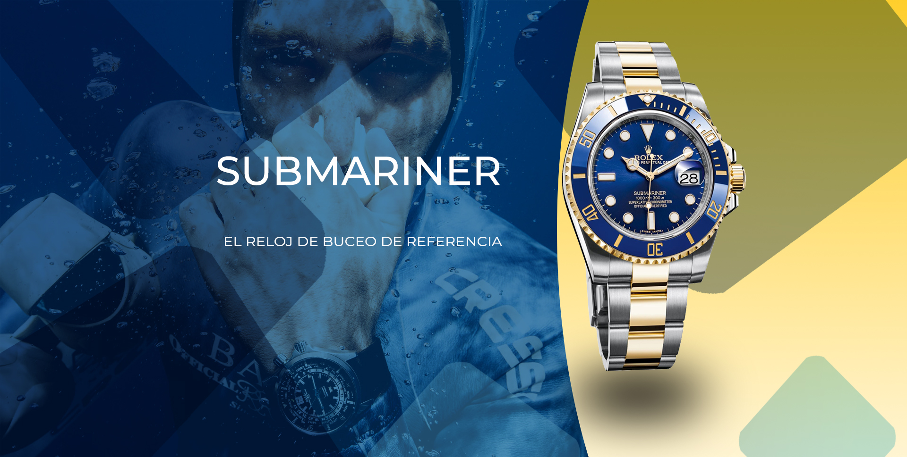
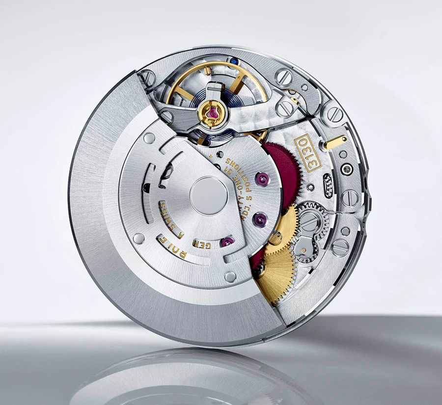
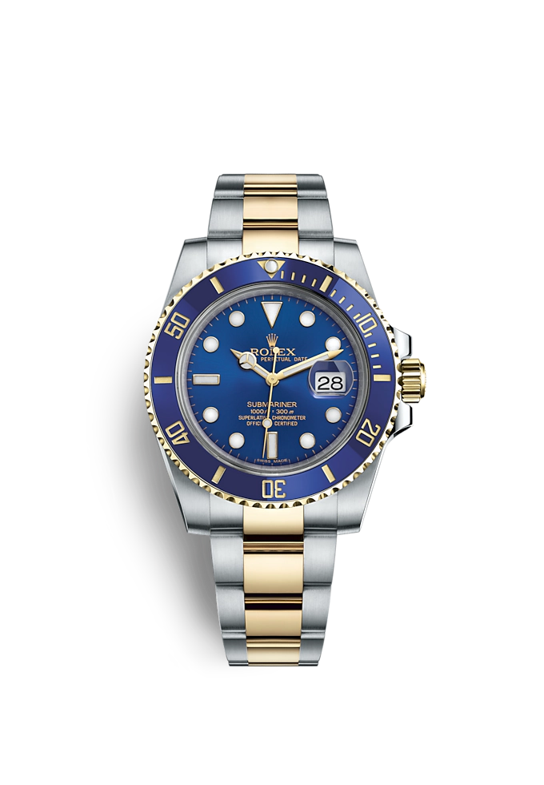
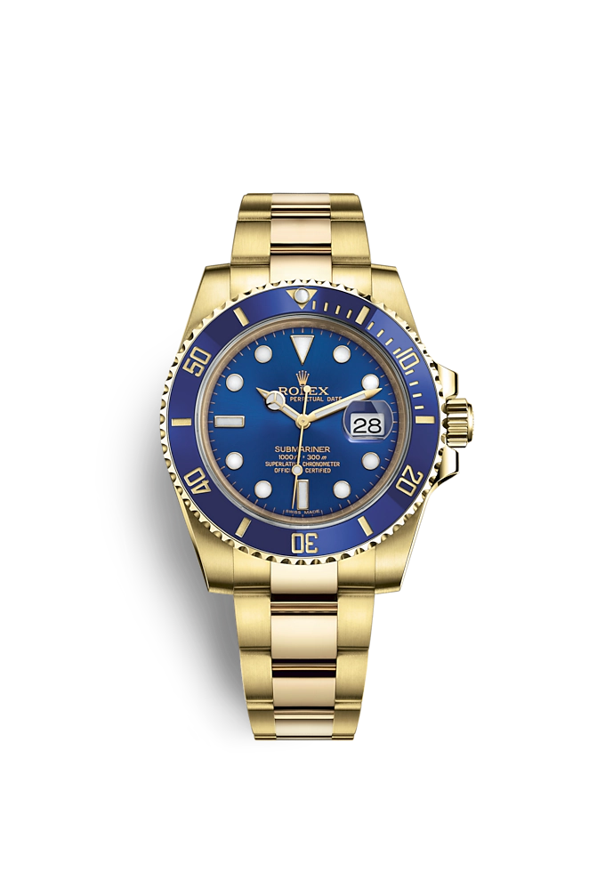
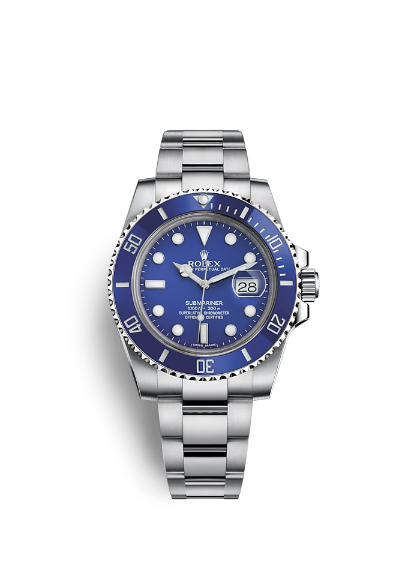

El Oyster Perpetual Submariner es el reloj de buceo de referencia; el reloj que ha conquistado las profundidades. Lanzado en 1953, el Submariner fue el primer reloj de pulsera hermético hasta 100 metros. Este fue el segundo gran logro en cuanto a maestría técnica de hermeticidad, tras la invención en 1926 del Oyster, el primer reloj de pulsera hermético del mundo. El Submariner supuso un hito en la historia de la relojería y se convirtió en el reloj de buceo por excelencia.
CARACTERÍSTICAS

Los modelos Submariner y Submariner Date están equipados con el calibre 3130 y el calibre 3135, respectivamente, movimientos mecánicos de cuerda automática completamente desarrollados y manufacturados por Rolex.
La visualización Chromalight de la esfera constituye una innovación que mejora la visibilidad en entornos oscuros, una función esencial para los submarinistas.


MODELOS

submariner date
Oyster, 40 mm, acero Oystersteel y oro amarillo

submariner date
Oyster, 40 mm, oro amarillo

submariner date
Oyster, 40 mm, oro blanco
pruebe
un submariner
en tienda
No hay nada que supere el poder de experimentar de primera mano los minuciosos detalles, el peso equilibrado, la comodidad o simplemente la sensación de llevar un Rolex.